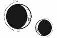

CAPÍTULO 26
Febre 1786
—¿Cómo que notaste algo raro en la resonancia? ¿Qué quieres decir? —preguntó Crowther cuando Helena terminó de contarle todo lo que había pasado. Le había pedido que acudiera a su despacho en cuanto cruzó el portón del Cuartel General.
Helena se cruzó de brazos.
—Supongo que se debe a que es un inmarcesible. Ha sido una experiencia distinta. No sé si podré transmutarlo. Sigue teniendo el mismo aspecto que en su foto de estudiante, así que a lo mejor no se le puede cambiar. No me ha dado la sensación de que sea posible manipularlo e, incluso si lo es, no sé si seré capaz de hacerlo con la suficiente sutileza.
—¿Te ayudaría contar con un sujeto con el que experimentar?
—¿Qué? —Lo miró horrorizada—. ¡No!
—Pero podría serte útil, ¿no te parece?
—No —insistió—. Soy sanadora y he jurado…
—No, no lo eres —la interrumpió Crowther, cuya voz sonó como el chasquido de unas tijeras al cerrarse—. No en lo que respecta al contexto de esta misión. Tu papel como sanadora no nos sirve de nada. Necesito que seas una vivemante dispuesta a hacer lo que sea por la causa. El heroísmo es algo que debemos dejarles a quienes se exponen a la opinión pública. El trabajo de inteligencia, el que hacemos nosotros, consiste en meternos en la cabeza de nuestros enemigos para robarles sus secretos, sin importar lo que cueste. Y ahora tú formas parte de este mundo.
Helena puso mala cara.
—Sé de sobra cómo lidiar con los aspectos fisiológicos. Lo que me preocupa es la regeneración. A no ser que tengáis un inmarcesible a mano, los experimentos no me van a servir de nada.
Crowther torció el gesto y se reclinó contra el respaldo de la silla.
—Ahora mismo no tenemos ninguno, pero podríamos conseguírtelo en caso de necesitarlo. —Entornó los ojos—. ¿Ese anillo te lo ha dado él?
La chica se lo quitó y lo deslizó por la mesa.
—Está enlazado. Su intención es utilizarlo para llamarme en caso de emergencia, pero dejó muy claro que cancelará nuestro trato de inmediato si nosotros lo utilizamos para llamarlo a él. Tenías razón al decir que es arrogante hasta la médula. Estuvo a punto de entrar en cólera solo por contemplar esa posibilidad.
Crowther estudió el anillo con atención mientras le daba vueltas entre los dedos.
—¿Es de plata?
—Sí.
Él asintió.
—Debe de haberlo heredado de su madre. Era una alquimista de la plata aquí en la Academia. Provenía de una familia de la baja nobleza, pero tenía un talento aceptable. Atreus estuvo prendado de ella durante un tiempo.
—¿Los conocías? —preguntó Helena con curiosidad.
—Solo de oídas. La opinión que los miembros de los gremios tenían de los estudiantes becados por aquel entonces no era distinta de la de ahora. Todo el mundo daba por hecho que lo suyo con Atreus no sería más que un enamoramiento pasajero. Un Ferron jamás dejaría a un lado su resonancia. Fue toda una sorpresa que se casara con ella en secreto, aunque es obvio que lo hizo por obligación. No me cabe en la cabeza cómo un hombre tan ambicioso como Atreus acabó metido en semejante embrollo, pero difícilmente habría podido enfrentarse al escarnio social y religioso que se hubiera desatado en caso de darle la espalda a la chica.
Quienes estudiaban el arte de la metalurgia sabían que la plata y el hierro eran elementos incompatibles. No se podían obtener aleaciones de ellos. Pero la plata era un metal noble y la madre de Ferron seguramente estaba por encima de su marido en la escala social, pese a que él dispusiese de mayor fortuna.
—Entonces ¿concibieron a Kaine sin estar casados? —preguntó vacilante.
Crowther negó con la cabeza.
—No, el chico nació un tiempo después. Enid tuvo… dificultades para concebir. Sufrió algunos abortos por culpa de una desafortunada conjunción con la resonancia. Cuando Enid llegó embarazada al hospital, los médicos concluyeron que el feto mostraba claros indicios de vivemancia. Aunque les advirtieron de los peligros de que el niño naciera, Atreus estaba desesperado por tener un heredero, así que se retiraron a su casa de campo. Meses más tarde, descubrieron que Atreus había estado recurriendo a la ayuda de vivemantes para manejar el embarazo de su esposa, un delito por el que lo encerraron durante varias semanas. Para cuando lo liberaron, Kaine ya había nacido.
El hombre dejó el anillo sobre el escritorio.
—Después de aquello, continuaron viviendo en el campo para no llamar la atención. Se decía que el parto había sido tan traumático para Enid que nunca volvió a dejarse ver en público. Atreus rara vez hablaba de ella. Luego, entre los gremios empezó a correr el rumor de que Kaine era un lapsus y que por eso la familia estaba haciendo todo lo posible por mantenerlo escondido. Llegó un momento en que la teoría estuvo tan extendida que Atreus no tuvo más remedio que presentar al niño en sociedad, aunque nunca le quitó el ojo de encima. El pobre diablo era como un perro atado a una correa. Atreus sabía que la Llama Eterna intervendría si el niño mostraba indicios de ser un vivemante. Con el precio tan alto que había pagado por tener un heredero, no podía permitirse perderlo. Nadie esperaba que matriculara al chico en la Academia, pero ¿qué otra cosa podía hacer? Si Kaine no desmentía los rumores acerca de sus habilidades ni obtenía su título, la familia perdería el control de los gremios.
—¿Cómo sabes todo esto? —preguntó Helena mientras volvía a ponerse el anillo.
Crowther enarcó una ceja.
—¿Por qué crees que entré a formar parte del profesorado y acabé siendo su tutor?
Helena lo miró estupefacta.
—Lo vigilabas para ver si resultaba ser un vivemante.
—Así es —respondió con un breve asentimiento—. Él era uno de los estudiantes a los que me pidieron supervisar. Por desgracia, al poco tiempo me reubicaron para investigar ciertos rumores que se habían expandido por la ciudad. De haber estado ahí, habría notado que algo iba mal cuando regresó a la Academia tras la ejecución de su padre. El curso de la historia habría sido muy diferente.
Cuando Helena regresó al módulo una semana más tarde, se quitó los guantes e hizo una pausa para apoyar una mano sobre la puerta con la intención de percibir el mecanismo de la cerradura con su resonancia. Aunque, tanto por dentro como por fuera, su punto de encuentro tenía el aspecto de estar abandonado, la puerta disponía de una intrincada cerradura.
Los mejores cerrojos se fabricaban con una mezcla de metales y elementos raros, adaptada a la resonancia particular del propietario y combinada generalmente con otros elementos inertes para crear puntos ciegos. Para abrirlos, el alquimista tenía que reconocer la sensación de los mecanismos que los componían, así como saber qué partes debía manipular.
Dejó los dedos apoyados sobre la puerta después de llamar. Se quedó tan absorta trazando el movimiento de la cerradura que la mano pálida que salió del interior la pilló totalmente desprevenida cuando la agarró de la muñeca y tiró de ella.
La puerta se cerró a su espalda y Ferron la arrinconó contra la pared.
Y eso que había prometido no tocarla.
Se acercó a ella, le apoyó una mano en el lateral del cuello y le rozó las vértebras con la punta de los dedos. Helena se obligó a levantar la cabeza cuando él bajó la suya.
Le dio un vuelco el corazón al tratar de tomar aire y no ser capaz de hacerlo.
Ferron se apartó y la estudió con una mirada vacía, carente de emoción.
Los pulmones empezaban a arderle mientras trataba de averiguar qué era exactamente lo que le estaba haciendo. Pese a su extensa experiencia como sanadora, aquella era la primera vez que usaban la vivemancia con ella.
Ferron ladeó la cabeza y la mantuvo erguida contra la pared agarrándola de un hombro.
—¿Dónde está tu instinto de supervivencia? Podría haberte matado cincuenta veces desde que has entrado en el edificio.
Helena no pudo responder. Los ojos empezaban a salírsele de las órbitas y su corazón, aunque seguía latiendo, trabajaba a toda velocidad. Debía de tener el rostro desencajado por el miedo, porque el chico se rio entre dientes.
—No te preocupes, que no voy a aprovecharme de ti —le susurró al oído.
Movió los dedos de forma casi imperceptible y por fin le devolvió a Helena el control de su respiración, si bien no del resto del cuerpo. Ella tomó una entrecortada bocanada de aire, en un siseo, lo más próximo a un grito que era capaz de proferir.
No conseguía zafarse de él. Ni siquiera podía encontrar su propia resonancia. La había pillado con la guardia baja al hacerle pensar que iba a besarla.
—Voy a mostrarte algo interesante. Según me han dicho, es uno de mis muchos talentos especiales.
Presionó la mano libre contra la frente de la chica y le oscureció la visión. Luego, sin previo aviso, se coló en su mente, como si le clavara una aguja en el cráneo.
Helena sufrió una sacudida.
Lo sentía en su interior. La resonancia de Ferron había impactado contra la superficie de su subconsciente con la fuerza de un rayo y ahora todos sus recuerdos pasaban por delante de sus ojos como si su mente se hubiera convertido en un zoótropo.
Fue como si estuviera retrocediendo en el tiempo: se vio chocando con la pared y levantando la cabeza para mirar a Ferron, que se cernía sobre ella. Luego se vio apoyando la mano contra la puerta y caminando por los pasillos del edificio y los claustrofóbicos callejones del complejo.
Ferron se adentró más en su mente y Helena se vio entonces cruzándose la bolsa de sanadora para salir a la calle.
Le estaba leyendo la mente.
No podía permitírselo.
Se debatió en un intento por liberarse, por arrancar su consciencia de las garras de Ferron.
Pero él ahondó todavía más en ella.
Ahora estaba en un laboratorio de química vacío, transmutando varios compuestos de gran rareza para elaborar un elixir. Cubrió el anillo que el chico le había dado con él, con cuidado de no alterar el enlace espejo.
Entonces la soltó sin previo aviso y Helena recuperó el control de su cuerpo, pero le cedieron las rodillas y tuvo que dejarse caer hasta el suelo. La cabeza le dolía tanto que incluso veía borroso.
—¿Qué le has hecho a mi anillo? —exigió saber el chico cerniéndose sobre ella.
—¿Qué me has hecho tú a mí? —replicó Helena con la voz temblorosa.
—Es un truco que me enseñó Artemon Bennet. —Ferron se alejó un paso de ella—. Lo llama animancia. Cuando capturamos a los soldados de la Resistencia con vida, solemos examinar sus recuerdos. Si alguna vez te capturan, es muy probable que contigo hagan lo mismo. Por eso supones un riesgo para mí.
Helena cerró los ojos esforzándose por recomponerse. En la Llama Eterna no tenían ni idea de que eso fuera posible. ¿Cómo iban a defenderse de un poder así?
—Te lo preguntaré una vez más. —La voz de Ferron sonaba implacable—. ¿Qué le has hecho a mi anillo? ¿Dónde está?
Helena tragó saliva.
—Es un elixir que se adhiere a las superficies y crea una capa que distorsiona las ondas de luz para que a quienes no saben que está ahí les resulte más difícil ver el anillo.
Ferron se agachó, le levantó la mano izquierda y le pasó el pulgar por los dedos para encontrar el anillo. Entornó la mirada y estudió la mano de la chica desde distintos ángulos.
Cuando arqueó las cejas, asombrado, Helena supo que por fin había conseguido verlo de nuevo.
—Nunca había oído hablar de algo así —admitió tras una larga pausa.
—Todavía está en fase experimental.
—¿Lo has inventado tú? —inquirió buscando su mirada con una ceja enarcada.
Ella asintió a regañadientes.
—Era uno de mis proyectos académicos, pero nunca conseguí que funcionara en superficies grandes. La refracción se vuelve irregular.
Ferron se incorporó y, cuando la ayudó a ponerse de pie, Helena reprimió un estremecimiento al ser consciente de lo que sería capaz de hacer con tan solo tocarla.
—No pienso tolerar que tu incompetencia me pueda afectar de ninguna manera.
Jamás nadie en su vida la había tachado de incompetente, así que se puso a la defensiva.
—¿Y cómo íbamos a saber que querías que tu pequeño trofeo de guerra fuera inmune a la telepatía?
—No es telepatía —la corrigió él con tono burlón—. Solo te he manipulado mínimamente el cerebro. Aunque sientas que me he metido en tu cabeza y que he visto tus recuerdos como si los estuviera viviendo a través de ti, a no ser que haga un barrido exhaustivo y los reproduzca varias veces, lo único que alcanzo a ver son destellos. Una buena parte de la información se pierde entre todo el ruido mental. Los momentos más nítidos y fáciles de descifrar son aquellos en los que tú misma pusiste más atención. Si alguna vez te cogen, no dejes que te engañen. Jamás verán más de lo que tú has visto.
—Entonces ¿qué has descubierto ahora? —le preguntó tratando de entenderlo.
—Que estás aterrorizada. —Sonrió—. Al desorientarte, el miedo te ha hecho vulnerable y te ha impedido pensar con la claridad necesaria para resistirte. Luego, he visto un borrón. Los dos momentos más claros han sido el de la puerta y el del anillo. Como en esos casos no pensabas en nada más que en la tarea que tenías entre manos, tu mente no ha emborronado los recuerdos. Al cerebro se le da de maravilla mostrar las prioridades de cada persona.
Entonces, si los inmarcesibles la interrogaban, no lo verían todo, sino solo aquello que era importante para ella. Magnífico.
—¿Y cómo me protejo? —Odiaba tener que preguntárselo a él, pero lo hizo—. ¿Cómo esperas que me defienda?
—Los interrogadores no se detendrán hasta que les des lo que quieren y no podrás impedir que se cuelen en tu mente, pero, si los convences de que eres débil, no se molestarán en escudriñar tus recuerdos a fondo. Tendrás que darles algún recuerdo lo bastante valioso como para que se crean que te lo han arrebatado. De ese modo, evitarás que accedan a tus verdaderos secretos.
La chica lo consideró por un momento. Todavía estaba apoyada contra la pared, porque no se fiaba de que sus piernas fueran a soportar su peso.
—Piénsalo. Escoge un recuerdo. Si yo estuviera buscando información sobre la Llama Eterna o los Holdfast, ¿qué podrías mostrarme para hacerme creer que he robado uno de tus mayores secretos? Al utilizar la resonancia en la mente de otra persona, se desata en ella la misma reacción que tendría al ver su casa envuelta en llamas. Lo primero que hará su cerebro será ir a buscar lo que considera más importante. Tendrás que aprender a hacer lo contrario. Céntrate en las minucias y recuerda que, mientras tú no llames la atención o ellos no analicen tu mente a fondo, lo único que obtendrán son destellos. No importa lo que tú creas que hayan visto.
—Está bien —dijo ella asintiendo despacio.
—La próxima semana, volveremos a intentarlo. Estate preparada.